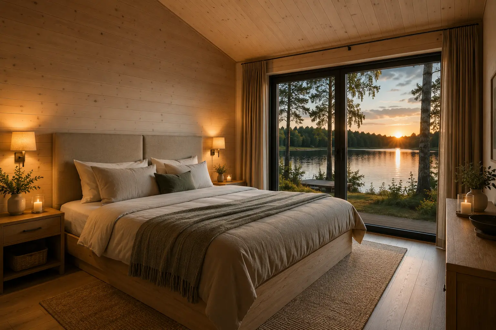
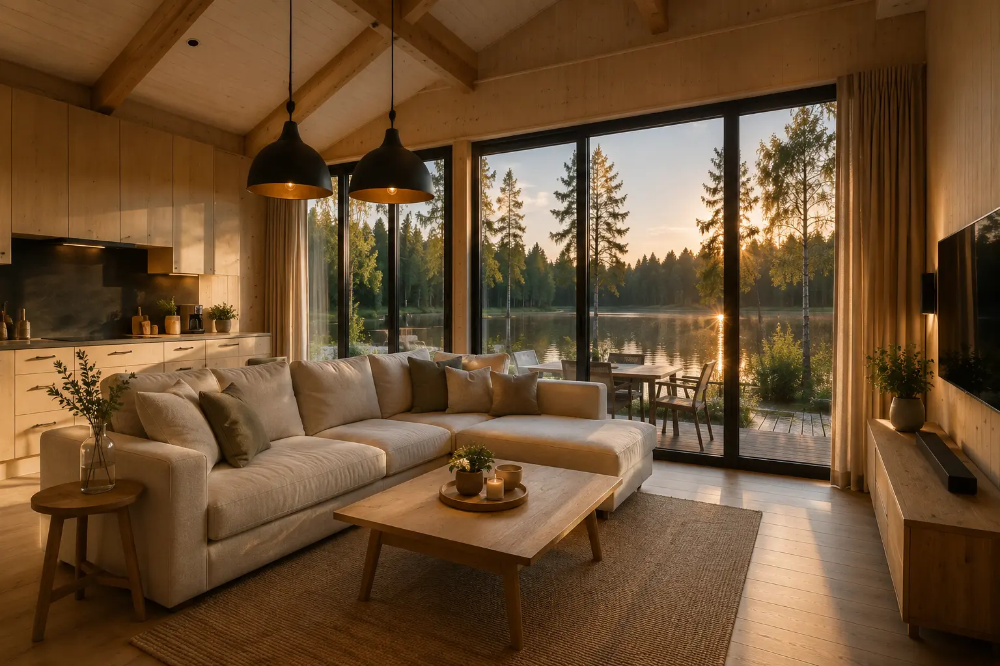
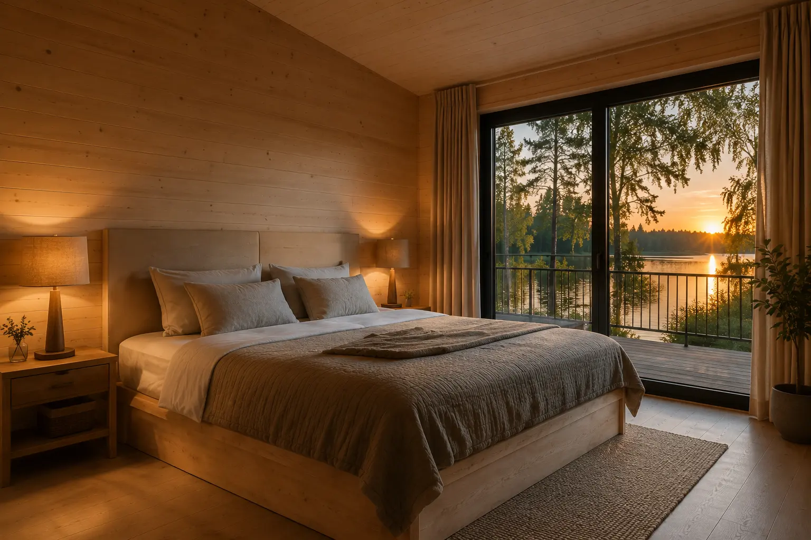
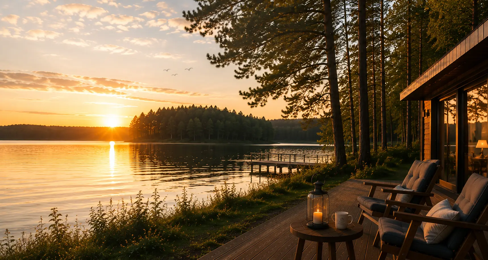

Jezioro tuż za tarasem
Bezpośredni dostęp do linii brzegowej i pomostu jest częścią pobytu, bez codziennych dojazdów nad wodę.

Domy nad jeziorem · Mazury
Całoroczne domy wakacyjne dla rodzin i grup — z prywatnym tarasem, dużymi przeszkleniami i Jeziorem Krzywe tuż za progiem.
Wspólny wysoki standard
Oba domy powstały z myślą o wspólnym czasie. Naturalne materiały, światło i widok na wodę budują spokojne tło dla rodzinnego wyjazdu, spotkania przyjaciół lub pobytu większej grupy.
Bezpośredni dostęp do linii brzegowej i pomostu jest częścią pobytu, bez codziennych dojazdów nad wodę.
Rodzina może wybrać jeden dom, a większa grupa zarezerwować dwa niezależne budynki.
Wiosna, długie letnie dni, jesienne światło i zimowa cisza mają tu własny rytm.
Wybierz swoją przestrzeń
Przełącz widok i porównaj wariant pobytu. Oba domy oferują ten sam standard, a każdy pozostaje niezależną przestrzenią.


Dom 1 · światło i wspólny salonOtwarta część dzienna łączy salon, jadalnię i wyposażoną kuchnię. Cztery sypialnie oraz trzy łazienki pozwalają wygodnie podzielić przestrzeń między domowników.


Dom 2 · niezależnie, w tym samym standardzieTen sam komfort i układ pozwalają podzielić większą grupę bez rezygnacji ze wspólnego czasu. Każdy wraca wieczorem do własnej części wypoczynkowej.
 Dwa domy · jeden wspólny wyjazd
Dwa domy · jeden wspólny wyjazdWynajem obu domów sprawdza się przy wyjazdach kilku rodzin i grup do 20 osób. Wspólny dzień nad wodą można połączyć z niezależnym odpoczynkiem.
Komfort bez nadmiaru
Najważniejsze funkcje domu są pod ręką, a widok i wspólna przestrzeń pozostają na pierwszym planie.
Przestrzeń do wspólnego gotowania i długich śniadań.
Widok na wodę i miejsce na spokojny początek dnia.
Jezioro dostępne bezpośrednio przy obiekcie.
Łączność wtedy, kiedy rzeczywiście jest potrzebna.
Wygodny podział przestrzeni dla rodzin i przyjaciół.
Więcej swobody podczas pobytu większej grupy.
Taras i otoczenie stworzone do rozmów po zachodzie.
Domy przygotowane na każdą porę mazurskiego roku.
Dom dopasowany do wyjazdu
Wybierz charakter pobytu i zobacz, które przestrzenie przejmują wtedy główną rolę.

Salon i jadalnia skupiają wszystkich przy jednym stole, a cztery sypialnie pozwalają zachować własny rytm odpoczynku.
Dwa domy dają grupie swobodę: wspólne aktywności i posiłki bez ścisku w prywatnej części pobytu.

Nie trzeba wypełniać dnia atrakcjami. Najlepsze chwile często zaczynają się od kawy i kończą przy tafli jeziora.
Domy w kadrach
Filtruj galerię i otwieraj zdjęcia w większym formacie. Każdy kadr pokazuje inną część pobytu.
Przed przyjazdem
Najważniejsze informacje są jasne od początku, dzięki czemu na miejscu można skupić się już tylko na wypoczynku.
Pełna oferta i zasadyNajczęstsze pytania
Najważniejsze odpowiedzi o układzie, liczbie gości i wynajmie obu domów.
505 586 950Każdy dom jest przeznaczony dla maksymalnie 10 osób. Przy wynajmie obu domów można zapytać o pobyt grupy liczącej do 20 osób.
Każdy dom ma cztery sypialnie i trzy łazienki, a także otwartą część dzienną z kuchnią oraz jadalnią.
Tak. Można zarezerwować jeden dom albo oba budynki, zależnie od liczby gości i dostępności terminu.
Tak. Krzywe Lake Houses przyjmuje gości przez cały rok — również wiosną, jesienią i zimą.
Tak. Bezpośredni dostęp do linii brzegowej i pomostu znajduje się przy obiekcie. Korzystanie z naturalnego akwenu wymaga zachowania zasad bezpieczeństwa.
Nie. Zwierzęta nie są akceptowane. We wnętrzach obu domów obowiązuje również zakaz palenia.
Jeden dom czy oba?
Napisz datę pobytu i liczbę gości. Potwierdzimy dostępność oraz aktualną cenę jednego lub dwóch domów.